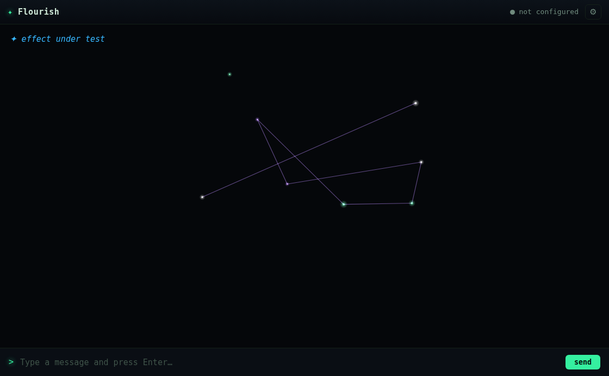
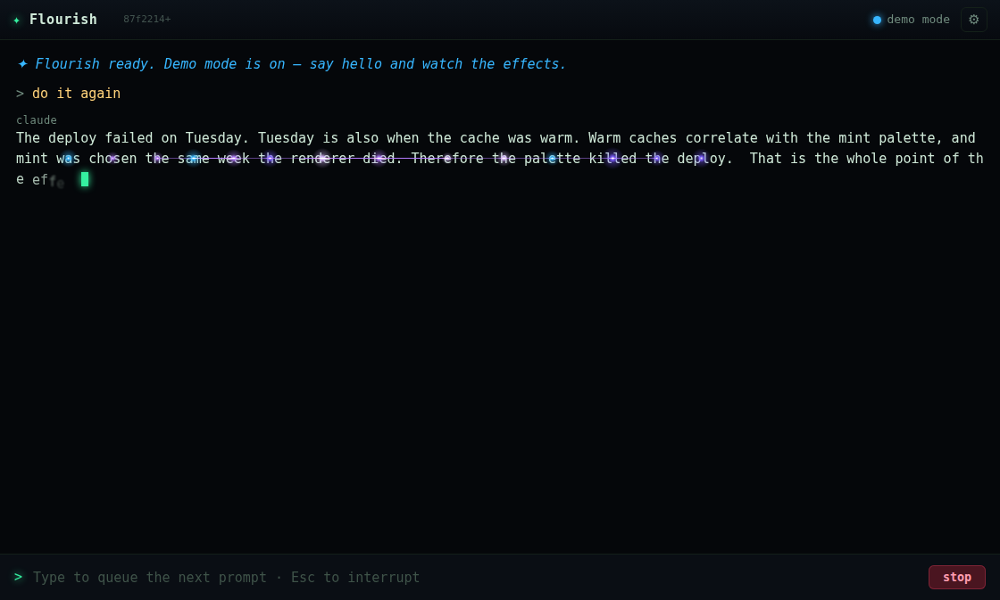
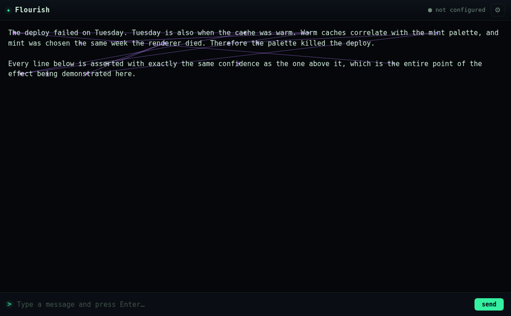
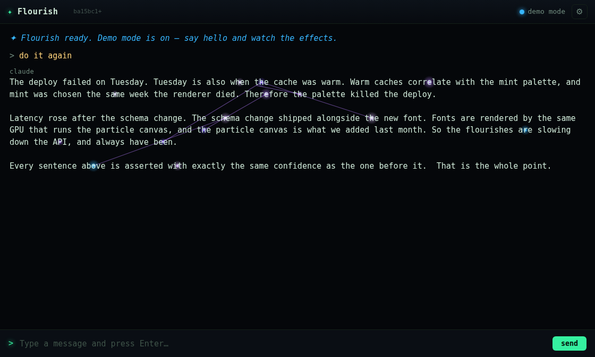
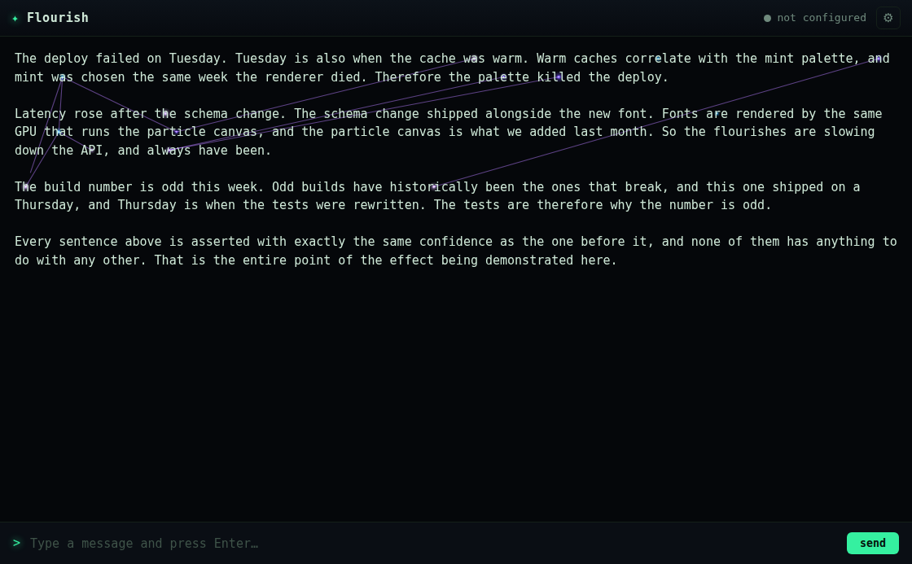

Jim asked to see apophenia. I fired it. He asked again. I fired it again, in a different palette, and explained what it was doing. He asked a third time:
"do it again i really dont see the effect"
Three requests is the tell. The standing lesson from the input-disable bug is that when Jim reports the same thing three times, the thing to suspect is my assertion, not his eyes — and I had spent three turns describing an animation I had never actually verified paints. It doesn't. On the real path, apophenia draws a near-horizontal hairline along one line of the transcript. It reads as a strikethrough, not a constellation.
Reading the code found nothing, three times over, and each dead end was informative:
| Suspicion | Result |
|---|---|
| Not registered — the directive is stripped as unknown | Wired correctly: flourish.js:55 lists it, renderer.js:373 passes anchors, effects.js:606 implements it. |
Not drawn — webs missing from the frame loop | Present in _busy(), ticked in _update(), drawn in _draw(). |
Coordinate-space mismatch — wordAnchors returns viewport coords | Correct space. The canvas is full-viewport (window.innerWidth/innerHeight) and caretPos uses getBoundingClientRect too. |
So I looked at the committed reference shot — the artifact whose whole job is to prove the effect paints. It is a picture of the bug's absence.

assets/fx/apophenia.png at ba15bc1). The transcript contains three words — "effect under test" — and the web is drawn in empty space below them, touching none of them. Eight points is the giveaway: that's the pts.length < 3 fallback inventing its own points around the caret. This is a photograph of the fallback path.The cause is one line in the harness. tools/fx-shots.js:148 fired every point effect the same way:
await win.webContents.executeJavaScript(`window.__fx.fire('${name}', 560, 330); true;`);
No options object, so o.anchors is undefined. That is fine for all 30 other point effects, because they invent their own points from (x, y) anyway. apophenia is the only effect whose input comes from outside itself, and wordAnchors is only ever called from applyEvents in the renderer, which the harness bypasses entirely. The real path had never been rendered by any test, screenshot, or unit test.
So I wrote tools/apophenia-probe.js, which drives the real renderer over the real preload with a real streamed reply and records what fire() is actually handed. (Two false starts worth noting, both already documented in smoke.js: a bare Electron entry point needs main.js's IPC handlers stubbed, and a show: false window throttles rAF so the typewriter never reaches the directive.) The first run answered it outright:
=== anchor spread === anchors: 14 x range: 77 -> 786 = 709 px y range: 178 -> 178 = 0 px <-- every anchor on one baseline distinct text lines (distinct y): 1

webs alive, 14 points, 9 pairs, drawing every frame. It is drawing nine hairlines between fourteen collinear points.wordAnchors(max) walked the transcript backwards from the tail and took the first 14 words it found. Fourteen consecutive words is, almost exactly, one visual line of text.
So the anchor set was collinear by construction — not by bad luck, not intermittently, not in some layouts. Every pair it linked resolved to a horizontal segment on a shared baseline, and nine of them stacked into one line. apophenia's entire visual identity depends on two-dimensional spread, and the sampling strategy guaranteed one dimension. It was never once visible in the app, from the moment it shipped.
constellation shares the same draw code and is fine, because it invents its own points in a disc around the caret. The difference between the two effects is exactly the thing that was broken.
Presented to Jim before touching anything; he took all three.
| Option | Decision |
|---|---|
| Sample across the whole visible transcript rather than the last 14 words — stratify over distinct baselines, a few words per line. | Chosen. It's also thematically the right answer: apophenia linking words from four different paragraphs is the effect. Words from one line were never going to look like a conclusion drawn badly. |
| Draw the web under the text instead of over it. | Chosen. It can then never read as a strikethrough — the standing rule that text which looks like it's eroding is the one thing Jim hates. |
Make fx-shots fire it the way the renderer does, and fail loudly rather than silently photograph the fallback. | Chosen. The harness is why this shipped. |
Leave the geometry inline in effects.js. | Rejected. effects.js needs a canvas, so nothing in node --test can reach it — which is half of why this survived 122 green tests. The rules moved to flourish.js, which is pure. |
Three rules, all pure and unit-tested in src/flourish.js:
stratifyAnchors(cand, max, rnd) — round-robin one word per line per pass. wordAnchors now measures a pool of up to 90 candidate words and stratifies down to 14, instead of taking the first 14 off the tail. The pool has to be several times max for there to be anything to stratify over.anchorsFlat(pts) — a whole-set degeneracy check. A short reply genuinely has one line of transcript and nowhere to hang a web; that's not a bug, but it must be detectable, so _apophenia takes its invented-points path rather than striking the only line of text out.planApopheniaPairs(pts, rnd) — per-pair angle rule. This one took two attempts.The first attempt rejected only same-baseline pairs. The set-wide check passed, the set spanned four lines — and the shot still had a rule through its top line:

anchorsFlat, and still contain pairs that graze. Two words on adjacent lines a thousand pixels apart make a segment at about 5°, which travels along the prose for its whole length and reads as an underline just as much as a flat one does.The defect was never the baseline — it's the angle. One rule covers both cases, since a same-line pair has slope zero:
const MIN_SLOPE = 0.18; // rise per unit run, ≈10° off horizontal
function pairShallow(a, b) {
return Math.abs(a.y - b.y) < MIN_SLOPE * Math.abs(a.x - b.x);
}
Deliberately asymmetric, because text is: a line of prose is ~1000px of run and ~22px of rise, so the near-horizontal links are the ones the layout makes easy. Distance is still ignored on purpose — a line across the whole screen asserted as confidently as one between neighbours is the effect working.
Rendering: a second canvas #fx-canvas-under at z-index: 0, beneath #app (z-index 1) but above the page background. Only apophenia's web uses it; every other effect stays on the overlay at z-index 50, where being on top is the point. This works only because #app, #screen and #transcript are all transparent — give any of them a background and the canvas silently disappears, which is noted in the CSS.
| anchors | x range | y range | text lines | reads as | |
|---|---|---|---|---|---|
shipped (ba15bc1) | 14 | 709 px | 0 px | 1 | a strikethrough |
| fixed | 14 | 876 px | 158 px | 6 | a web |

tools/apophenia-probe.js). Lines span paragraphs — "Tuesday" hooked to a word two lines down, the renderer sentence tied to the GPU sentence — and pass behind the characters instead of through them. Same probe, same reply, same 14 anchors requested.
fx-shots gives apophenia real prose and real anchors from the renderer's own wordAnchors, and throws if they come back too few or collinear — so this shot can no longer quietly become a picture of the fallback. Its prose was also lengthened: a four-line transcript isn't a fair test, because every link in it is near-horizontal for want of anywhere else to go.npm run smoke — 13/13, renderer logs no errors.npm run fx-shots — 44 frames, apophenia now asserted rather than assumed. anchors-probe.txt has the full before/after probe output.The effect was dead on arrival and shipped with a beautiful screenshot of a code path that only runs when the effect has nothing to work with. Two things made that possible, and neither is about apophenia:
fx-shots's uniformity — every effect fired identically — was the bug: it silently swallowed the one effect that isn't uniform.